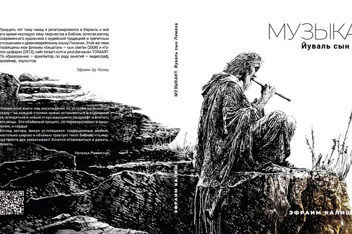

Библия и творчество
Этот блог – моя попытка осмыслить место художника Израиля на нашей земле, внутри этих грандиозных планов Божьих, провозглашенных еще пророками нашими более трех тысяч лет назад.
Новые статьи

Книги и арт-проекты
МУЗЫКАНТ. Йуваль, сын Лемеха. Аудиокнига

Книги и арт-проекты
Эфраим Калиш. «МУЗЫКАНТ. Йуваль, сын Лемеха»

Книги и арт-проекты
Эфраим Калиш. Книги о творчестве в Библии

Библия и художник
НАЗНАЧЕНА ДАТА ПРЕМЬЕРЫ / Армения ВОЗРОЖДЕНИЕ

Библия и художник
ЮВАЛЬ - Отец играющих на арфе и свирели

Арт-мидраш
ДОМ ИЗ СЛОВ: 10 ФАКТОВ ОБ ОДНОЙ СИНАГОГЕ
Рубрики
Арт-мидраш
Толкование Писаний, исходя из еврейского оригинала
Артефакты
Археология Израиля, явления еврейской культуры
Библия и художник
Творчество и Библия
Праздники в Библии
Библейские праздники как высшее выражение творчества человека пред Творцом
Израиль и Церковь
Взаимодействие двух ветвей
Книги и арт-проекты
Мои творческие проекты, опыты, мысли
Язык Библии
Иврит — язык, на котором написаны Священные Писания
Путешествия
Мои путешествия по Израилю и другим странам
Галереи
Фото из моих путешествий, мои творческие работы
Об авторе
О блоге, о себе